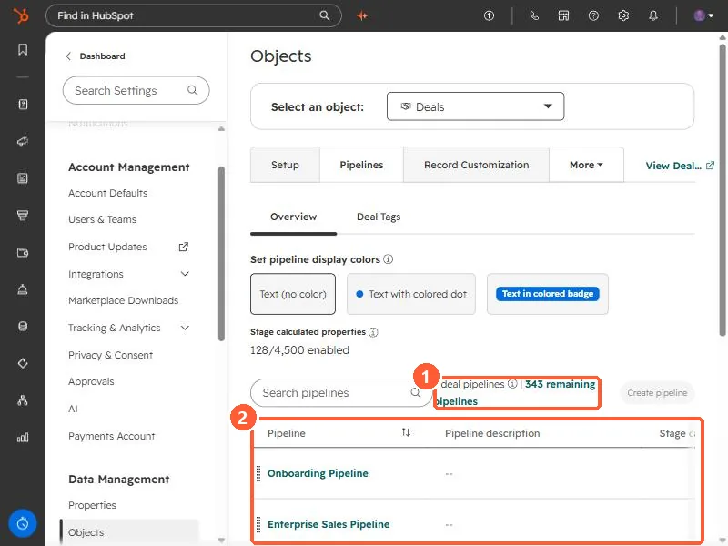
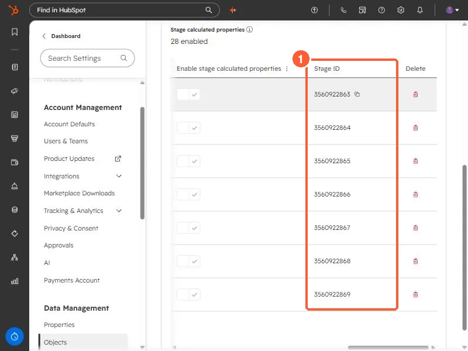

Short answer
Open a pipeline in Settings, Objects, Deals, Pipelines. The pipeline's ID is the number at the end of the page URL, and the stage table has a Stage ID column with a copy icon. HubSpot says these internal names are what integrations and APIs use. The Pipelines page also shows how many pipelines you have and how many remain. My demo has 7 with 343 remaining, which matches HubSpot's 350 limit for Enterprise.
1. The pipeline list and limit
Open deal pipeline settings.


The count reads 7 deal pipelines | 343 remaining pipelines. HubSpot's custom pipeline limits on seat-based plans are 15 on Starter, 100 on Professional, and 350 on Enterprise. Free tools get no custom pipelines.
2. The pipeline ID
Click a pipeline. Its ID is the last number in the address bar. Mine is /pipelines-settings/242678301/object/0-3/2222902003, so the pipeline ID is 2222902003. HubSpot also shows it as the pipeline's internal name through a code icon.
3. The stage IDs
On the Configure tab, scroll the stage table to the right. Its columns are Stage name, Stage description, Probability, Used in, Conditional logic rules, Pipeline rules, Enable stage calculated properties, Stage ID, and Delete.


- Use the stage ID, not the label, in API calls and integration mappings. Labels can be renamed. IDs do not change when you rename.
- For other IDs you may need, see HubSpot object type IDs and find your portal ID.